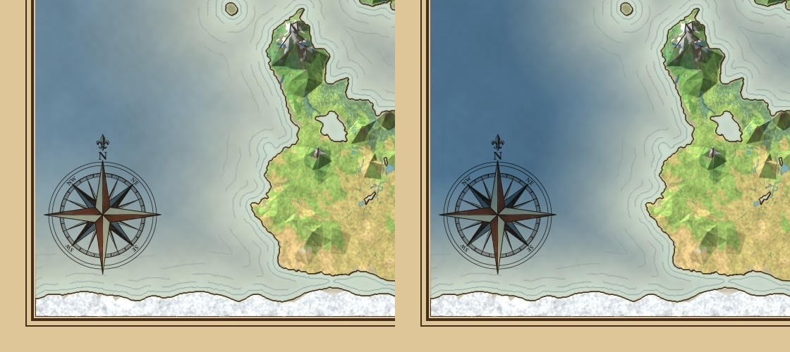
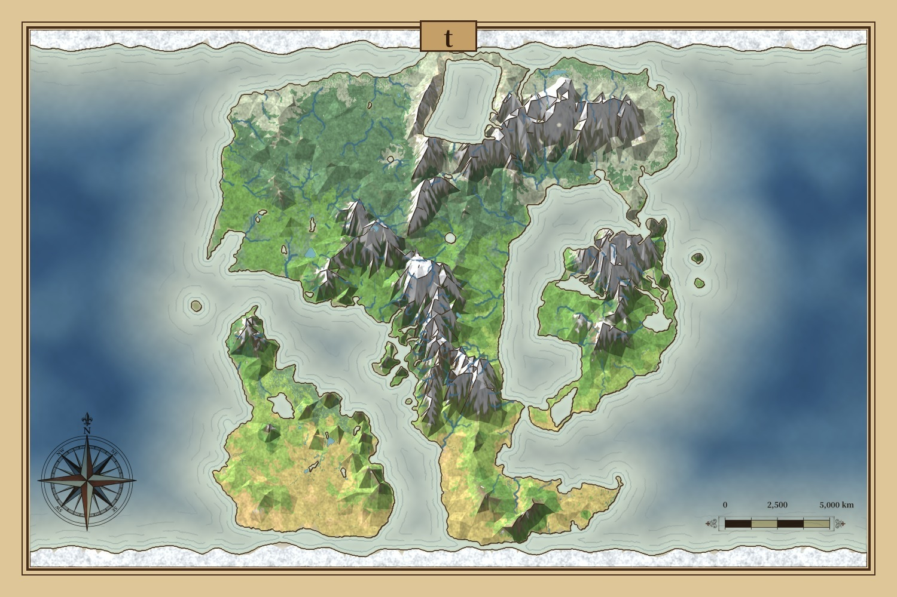
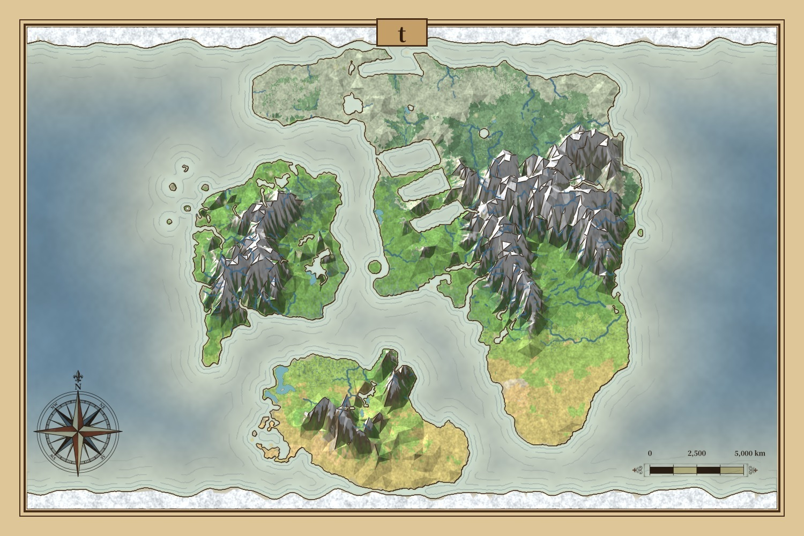
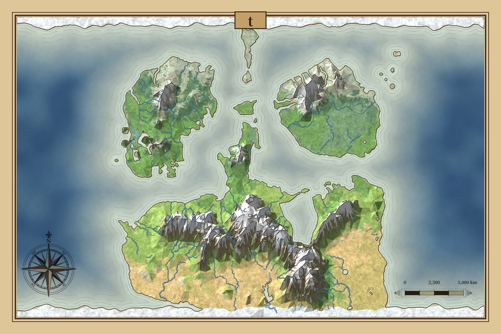
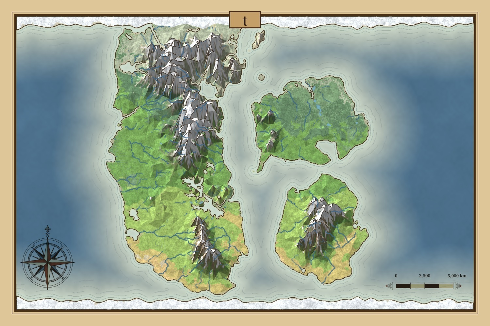
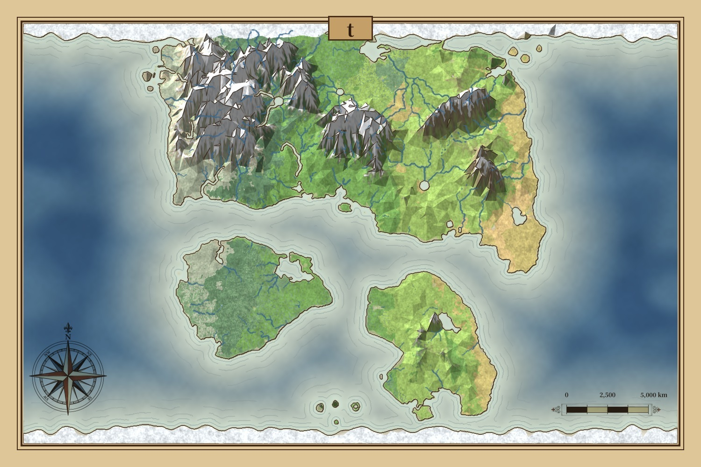

海の深さの色(試作・11-20)
概要: 海を、岸の近くは明るい青灰、沖へ行くほど濃い青にしました。岸の浅瀬(明るい青緑)と波線はそのままで、その沖に深い色が広がります。方位記号・縮尺・川も入れた最新の絵です。
拡大(左=濃くした版、右=さらに「もっと濃いところ」を足した今回)
ご指摘(11-20 21:52「もう少し濃いところを作る」)を、「沖の深い所に、さらに濃い青の塊を足す」と読みました。岸から約110ピクセル以上沖で、ゆらぎのある塊として最も濃い青(42,74,112)を、強さ約7割で重ねています。

絵番号 E222
全体(5世界)

絵番号 E223

絵番号 E224

絵番号 E225

絵番号 E226

絵番号 E227
やったこと
- 最初は、世界データの「海の深さ」をそのまま使った。すると、世界の正方形の外側(穴埋め部分)だけ極端に濃くなり、境目が縦の線として見えたので、やめた。
- いまは「岸からの距離」だけで決める。なめらかにつなぐ。色は深いほど青(RGB 72,110,140)で、濃さ約95%。約170ピクセル沖で最も濃い。(最初は86,122,150・濃さ約8割・約230ピクセルだったが、ご指摘『全体的に薄くなり過ぎ』(11-20 21:49)で濃く・早くした。)
目で見た評価(世界7と16)
- 岸は明るく、沖は青く、地図らしい「海の奥行き」が出た。
- 左右の端の沖は特に濃く、陸の周りは明るい帯になる。
- 世界の海底の本当の深さではない(岸からの距離だけ)。深い海溝などは出ない。
限界・未確認
- 各世界1枚・目視のみ。iPhoneでの見え方は未測定。3D表示には未反映。
- 世界16では、縮尺の棒が陸の右端に接している。位置の調整は未実施。
- 内陸の大きな四角い湖は、いまも海と同じ扱いで、海と同じ青になる(未解決)。
- 濃さ・色の数字は私が決めた初期値。
次の一手: 海の濃さ(もっと濃く/薄く)を見て判断していただく。
ハブにもどる